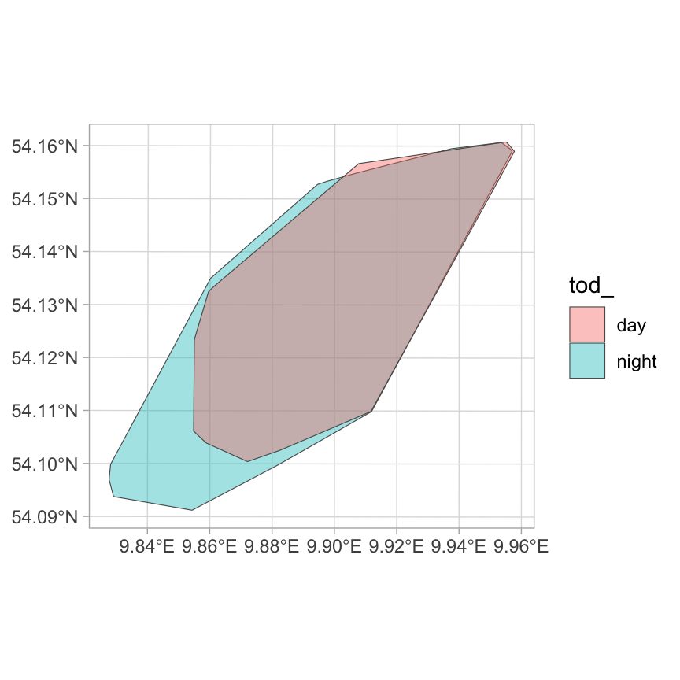
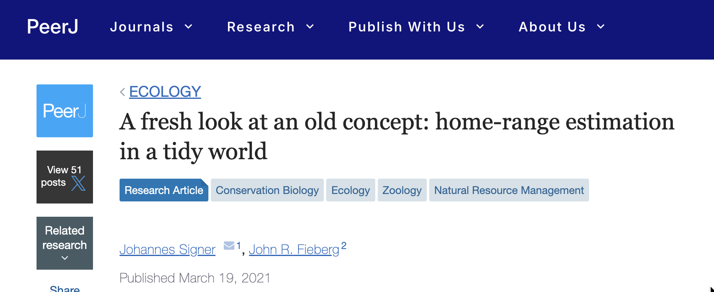
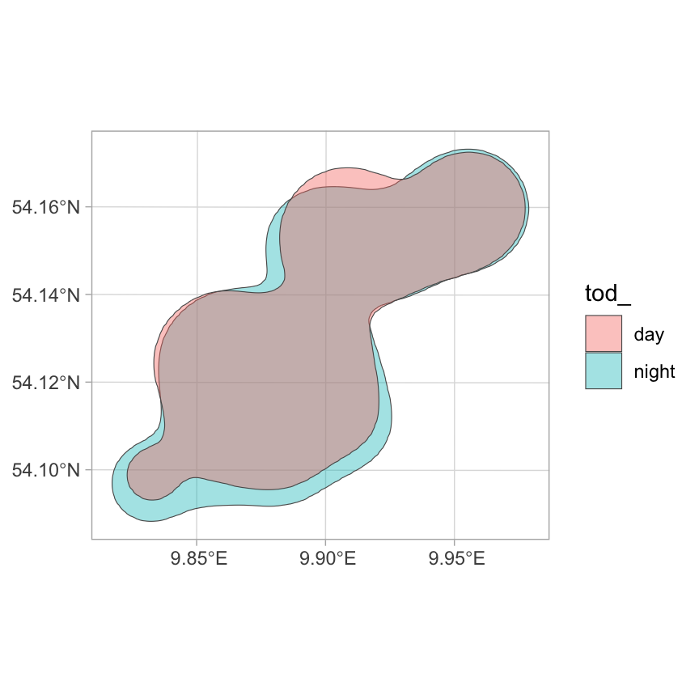

![]()

Working with Home Ranges
Analysis of Animal Movement Data with R (together with Brian Smith)
February 14, 2026
Goals
- Overlaps home ranges
- Efficiently working with many instances
- Exporting home ranges
Many methods and ideas of this module are described here

Two ways to calculate overlaps
Geometric intersections
- This is a geometric intersection between the isopleths of home ranges. It is the percentage area of one homerange covered by the other home range.
- Note, the order matters, since
hr_overlap(a, b) != hr_overlap(b, a).
Overlap day and night:
# A tibble: 1 × 2
level overlap
<dbl> <dbl>
1 0.95 0.783Overlap night and day:
# A tibble: 1 × 2
level overlap
<dbl> <dbl>
1 0.95 0.988Volumne of intersections
- This is the volumne that overlaps of two home ranges.
- Note, the order does not matter, since
hr_overlap(a, b, type = "vi") == hr_overlap(b, a, type = "vi").

Intersection
Overlap day and night:
# A tibble: 1 × 2
level overlap
<dbl> <dbl>
1 0.95 0.870Overlap night and day:
# A tibble: 1 × 2
level overlap
<dbl> <dbl>
1 0.95 0.970Volumne of intersection
Overlap day and night:
# A tibble: 1 × 2
levels overlap
<dbl> <dbl>
1 1 0.816Overlap night and day:
# A tibble: 1 × 2
levels overlap
<dbl> <dbl>
1 1 0.816In amt there is the function hr_overlap() to calcualte different overlap metrics. These can be specified with the argument type:
hr(the default) calcualtes the percentage overlap of the first home range with the second home range.vicalculates the volumne of intersectino between two UDs.baThe Bhattacharyya’s affinity between two UDs.
Both, vi and ba range from 0 (no overlap at all) to 1 for identical home ranges.
Others metrics are also available, see Fieberg and Kochanny (2005) for a more extensive discussion and simulation study.
In cases where there are multiple instances (e.g., many animals or many home ranges of the same animal), hr_overlap() also accepts a list. Then the argument which becomes interesting. The following values are possible:
all: Overlap between all instances are calculated.consecutive: Only consecutive home-range overlaps are calculated.one_to_all: Home-range overlaps are calculated from the first instance to all others.
Overlap with other feature
The function hr_overlap_feature() allow to calculate percentage overlaps between a hoem range and other features (from the sf package). This could be a park boundary, landuse types or a like.
In ctmm for aKDE home-ranges overlaps can in addition be calculated with the confidence intervals.

Exporting home ranges
From home ranges to simple features
There are two ways to export a home range:
- The function
hr_isopleth()always returns asf-feature (Polygon). - The function
hr_to_sf()can take list-column with home range estiamtes and other columns and turn them into atibblewith a simple feature (geoemetry) column.
Writing home ranges
- Any exported home range (that is now in an
sf) format, can be written to your hard-drive withsf::st_write()or used for plotting.